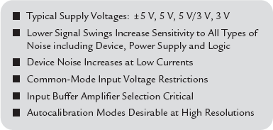

线性方程组和特征系统
- 对物理系统进行数学建模时，常通过线性方程组或特征系统来描述。
- 线性方程组可用矩阵和向量表示。有关矩阵和向量的重要性质参见笔记。
- MATLAB中的函数和运算符能直接操作向量和矩阵。分别用于解决线性方程和特征值问题。
线性方程组
等价说法 记A为n*n矩阵。
若Ax=b相容，且有唯一解。
- Ax=0 有唯一的平凡解 x=0
- A非奇异，且A的行列式不为0
- A的约化行阶梯型是单位矩阵
- A有n个线性无关的行或列
- A满秩
若Ax=b不相容，或是相容 无穷解。
- Ax=0解不唯一
- A奇异，且行列式为0
- A的约化行阶梯型 至少包含一个非零行
- A有线性相关的行或列
- A不满秩
以上讨论的是未知数和方程个数相等的情形。
若方程个数小于未知数个数，则称该方程组是欠定的。这样的方程没有唯一解，即无穷多解或无解。（这就相当于三维空间中的两个平面，这两个平面共线或平行）
若方程个数多于未知数个数，则称该方程组是超定的。这样的方程组可以共点（唯一解），共线（无穷解），平行（无解）。
应该注意的是，其中任意三个平面的交集为一个点，且这些点很接近，可以求出这些交点的中点来作为该方程组的近似解。由于方程组的系数通常是从实验室得到的，所以经常会出现很接近相容的情形。相较于认为其不相容，其实更希望知道近似满足该方程组的最优解。
DSP
本章重点：
- DT信号与系统的概念
- 重要的信号类型及其运算
- LTI系统
- 卷积和差分方程
离散时间信号
广义上来讲，信号分为CT和DT两种。当然，不仅仅时间作为其变量，其他也是可以的。
本质上来讲，DT信号属于采样信号，是数值的序列。
在MATLAB中，
- 如果对样本的位置信息不做要求时，便可以一个行向量来表示一个有限长序列x。
- 如果对样本的位置信息有要求时，则需要有两个向量：一个对x，一个对n。
- 由于存储空间的限制，一个任意无限长序列不能用MATLAB表示。
基本序列的定义和MATLAB表示
- 单位冲激序列
- 单位阶跃序列
- 实值指数序列
- 复值指数序列
- 正弦序列
- 随机序列：许多实际序列没有特定的数学形式来描述。故使用两种类型的随机序列来表示。
- rand(M,N):产生一个M*N，其值在[0,1]之间的均匀分布的随机序列。
- randn(M,N):产生一个M*N，均值为0，方差为1的高斯型随机序列。
- 周期序列：利用[x,x,x,x...]即可。
序列运算
- 信号相加：+ 注意信号之间的位置（长度）必须相同。要求注意MATLAB的编序运算。
- 信号相乘：.* 注意同上。
- 加权：*
- 移位：仅位置改变而已。
- 反转：使用反转函数 fliplr()分别改变x和n。
- 累加：sum(x(n1:n2))
- 累乘：prod(x(n1:n2))
- 信号能量：sum(x.*conj(x))或sum(abs(x).^2)
- 信号功率：./length(x)
- 卷积：conv(x,h)
- 差分：filter(b,a,x)
- DSP系统支持模拟信号的输入，在处理这些输入的信号前，需进行模数转换（ADC）
- DSP系统支持模拟信号的输出，在处理这些输出的信号前，需进行数模转换（DAC）
- ADC/DAC往往存在缺陷，带来噪声、失真以及（混叠：ONLY ADC）。使得转换后的信号无 法完全精确的重构出原来的信号
了解“ ADC 和 DAC 是存在缺陷的”这一点是非常重要的。
编码和量化
ADC：信息处理，计算，控制以及数据转换。
DAC：信息显示，控制以及进一步在模拟域进行处理。
模拟输入量通常被传感器转换成电压或电流。这些电量可以有3种形式出现：
- 对时域中的现象以或快或慢的直流连续直接的测量：热电偶的输出、直流参考下的电位器、模拟运算电路
- 解调的交流波形：斩波光学测量、直流应变器、电桥输出、含噪声的数字电路
- 在某些组合中，相关变量的空间配置以表示轴角：同步器、分解器
ADC
The trend in ADCs and DACs is toward higher speeds and higher resolutions at reduced power levels and supply voltages. Modern data converters generally operate on ±5 V (dual supply), 5 V or 3 V (single supply). In fact, the number of 3 V devices is rapidly increasing because of many new markets such as digital cameras, camcorders, and cellular telephones. This trend has created a number of design and applications problems that were much less important in earlier data converters, where ±15 V supplies and ±10 V input ranges were the standard.
Lower supply voltages imply smaller input voltage ranges, and hence more susceptibility to noise from all potential sources: power supplies, references, digital signals, EMI/RFI, and probably most important, improper layout, grounding, and decoupling techniques. Single-supply ADCs often have an input range that is not referenced to ground. Finding compatible single-supply drive amplifiers and dealing with level shifting of the input signal in direct-coupled applications also becomes a challenge.
In spite of these issues, components are now available that allow extremely high resolutions at low supply voltages and low power. This section discusses the applications problems associated with such components and shows techniques for successfully designing them into systems.
The most popular ADCs for DSP applications are based on five fundamental architectures: successive approximation, sigma-delta, flash, subranging (or pipelined), and bit-per-stage (or ripple).

Figure 3-1: Low Power, Low Voltage ADC Design Issues.

Figure 3-2: ADCs for DSP Applications.
Successive-Approximation ADCs
The successive-approximation ADC has been the mainstay of signal conditioning for many years. Recent design improvements have extended the sampling frequency of these ADCs into the megahertz region. The use of internal switched capacitor techniques, along with autocalibration techniques, extends the resolution of these ADCs to 16 bits on standard CMOS processes without the need for expensive thin-film laser trimming.
The basic successive-approximation ADC is shown in Figure 3-3. It performs conversions on command. On the assertion of the CONVERT START command, the sample-and-hold (SHA) is placed in the hold mode, and all the bits of the successive-approximation register (SAR) are reset to "0," except the MSB, which is set to "1." The SAR output drives the internal DAC. If the DAC output is greater than the analog input, this bit in the SAR is reset; otherwise it is left set. The next most significant bit is then set to "1." If the DAC output is greater than the analog input, this bit in the SAR is reset; otherwise it is left set. The process is repeated with each bit in turn. When all the bits have been set, tested, and reset or not as appropriate, the contents of the SAR correspond to the value of the analog input, and the conversion is complete. These bit "tests" can form the basis of a serial output version SAR-based ADC.
The end of conversion is generally indicated by an end-of-convert (EOC), data-ready (DRDY), or a busy signal (actually, not-BUSY indicates end of conversion). The polarities and name of this signal may be different for different SAR ADCs, but the fundamental concept is the same. At the beginning of the conversion interval, the signal goes high (or low) and remains in that state until the conversion is completed, at which time it goes low (or high). The trailing edge is generally an indication of valid output data.

Figure 3-3: Successive-Approximation ADC.
An N-bit conversion takes N steps. It would seem on superficial examination that a 16-bit converter would have twice the conversion time of an 8-bit one, but this is not the case. In an 8-bit converter, the DAC must settle to 8-bit accuracy before the bit decision is made, whereas in a 16-bit converter, it must settle to 16-bit accuracy, which takes a lot longer. In practice, 8-bit successive-approximation ADCs can convert in a few hundred nanoseconds, while 16-bit ones will generally take several microseconds.
Notice that the overall accuracy and linearity of the SAR ADC is determined primarily by the internal DAC. Until recently, most precision SAR ADCs used laser-trimmed thin-film DACs to achieve the desired accuracy and linearity. The thin-film resistor trimming process adds cost, and the thin-film resistor values may be affected when subjected to the mechanical stresses of packaging.
For these reasons, switched capacitor (or charge-redistribution) DACs have become popular in newer SAR ADCs. The advantage of the switched capacitor DAC is that the accuracy and linearity is primarily determined by photolithography, which in turn controls the capacitor plate area and the capacitance as well as matching. In addition, small capacitors can be placed in parallel with the main capacitors which, can be switched in and out under control of autocalibration routines to achieve high accuracy and linearity without the need for thin-film laser trimming. Temperature tracking between the switched capacitors can be better than 1 ppm/C, thereby offering a high degree of temperature stability.
A simple 3-bit capacitor DAC is shown in Figure 3-4. The switches are shown in the track, or sample mode where the analog input voltage, AIN, is constantly charging and discharging the parallel combination of all the capacitors. The hold mode is initiated by opening SIN, leaving the sampled analog input voltage on the capacitor array. Switch SC is then opened, allowing the voltage at node A to move as the bit switches are manipulated. If S1, S2, S3, and S4 are all connected to ground, a voltage equal to –AIN appears at node A. Connecting S1 to VREF adds a voltage equal to VREF/2 to –AIN. The comparator then makes the MSB bit decision, and the SAR either leaves S1 connected to VREF or connects it to ground, depending on the comparator output (which is high or low depending on whether the voltage at node A is negative or positive, respectively). A similar process is followed for the remaining two bits. At the end of the conversion interval, S1, S2, S3, S4, and SIN are connected to AIN, SC is connected to ground, and the converter is ready for another cycle.

Figure 3-4: 3-Bit Switched Capacitor DAC.
Note that the extra LSB capacitor (C/4 in the case of the 3-bit DAC) is required to make the total value of the capacitor array equal to 2C so that binary division is accomplished when the individual bit capacitors are manipulated.
The operation of the capacitor DAC (cap DAC) is similar to an R/2R resistive DAC. When a particular bit capacitor is switched to VREF, the voltage divider created by the bit capacitor and the total array capacitance (2C) adds a voltage to node A equal to the weight of that bit. When the bit capacitor is switched to ground, the same voltage is subtracted from node A.
Because of their popularity, successive-approximation ADCs are available in a wide variety of resolutions, sampling rates, input and output options, package styles, and costs. It would be impossible to attempt to list all types, but Figure 3-5 shows a number of recent Analog Devices' SAR ADCs that are representative. Note that many devices are complete data acquisition systems with input multiplexers that allow a single ADC core to process multiple analog channels.

Figure 3-5: Resolution/Conversion Time Comparison for Representative Single-Supply SAR ADCs.
While there are some variations, the fundamental timing of most SAR ADCs is similar and relatively straightforward (see Figure 3-6). The conversion process is initiated by asserting a CONVERT START signal. The

signal is a negative-going pulse whose positive-going edge actually initiates the conversion. The internal sample-and-hold (SHA) amplifier is placed in the hold mode on this edge, and the various bits are determined using the SAR algorithm. The negative-going edge of the

pulse causes the

or BUSY line to go high. When the conversion is complete, the BUSY line goes low, indicating the completion of the conversion process. In most cases the trailing edge of the BUSY line can be used as an indication that the output data is valid and can be used to strobe the output data into an external register. However, because of the many variations in terminology and design, the individual data sheet should always be consulted when using a specific ADC.

Figure 3-6: Typical SAR ADC Timing.
It should also be noted that some SAR ADCs require an external high frequency clock in addition to the CONVERT START command. In most cases, there is no need to synchronize the two. The frequency of the external clock, if required, generally falls in the range of 1 MHz to 30 MHz, depending on the conversion time and resolution of the ADC. Other SAR ADCs have an internal oscillator that is used to perform the conversions and require only the CONVERT START command. Because of their architecture, SAR ADCs allow single-shot conversion at any repetition rate from dc to the converter's maximum conversion rate.
In an SAR ADC, the output data for a sampled input is valid at the end of the conversion interval for that sampled input. In other ADC architectures, such as sigma-delta or the two-stage subranging architecture shown in Figure 3-7, this is not the case. The subranging ADC shown in the figure is a two-stage pipelined or subranging 12-bit converter. The first conversion is done by the 6-bit ADC, which drives a 6-bit DAC. The output of the 6-bit DAC represents a 6-bit approximation to the analog input. Note that SHA2 delays the analog signal while the 6-bit ADC makes its decision and the 6-bit DAC settles. The DAC approximation is then subtracted from the analog signal from SHA2, amplified, and digitized by a 7-bit ADC. The outputs of the two conversions are combined, and the extra bit used to correct errors made in the first conversion. The typical timing associated with this type of converter is shown in Figure 3-8. Note that the output data presented immediately after sample X actually corresponds to sample X–2, i.e., there is a two-clock-cycle "pipeline" delay. The pipelined ADC architecture is generally associated with high speed ADCs, and in most cases the pipeline delay, or latency, is not a major system problem in most applications where this type of converter is used.

Figure 3-7: 12-Bit Two-Stage Pipelined ADC Architecture.

Figure 3-8: Typical Pipelined ADC Timing.
Pipelined ADCs may have more than two clock cycles of latency depending on the particular architecture. For instance, the conversion could be done in three, or four, or perhaps even more pipelined stages causing additional latency in the output data. Therefore, if the ADC is to be used in an event-triggered (or single-shot) mode where there must be a one-to-one time correspondence between each sample and the corresponding data, the pipeline delay can be troublesome and the SAR architecture is advantageous. Pipeline delay or latency can also be a problem in high speed servo-loop control systems or multiplexed applications. In addition, some pipelined converters have a minimum allowable conversion rate and must be kept running to prevent saturation of internal nodes.
Switched capacitor SAR ADCs generally have unbuffered input circuits similar to the circuit shown in Figure 3-9 for the AD7858/AD7859 ADC. During the acquisition time, the analog input must charge the 20 pF equivalent input capacitance to the correct value. If the input is a dc signal, then the source resistance, RS, in series with the 125 Ω internal switch resistance creates a time constant. In order to settle to 12-bit accuracy, approximately nine time constants must be allowed for settling, and this defines the minimum allowable acquisition time. (Settling to 14 bits requires about 10 time constants, and 16 bits requires about 11).

For example, if RS = 50 Ω, the acquisition time per the above formula must be at least 310 ns.
For ac applications, a low impedance source should be used to prevent distortion due to the nonlinear ADC input circuit. In a single-supply application, a fast settling rail-to-rail op amp such as the AD820 should be used. Fast settling allows the op amp to settle quickly from the transient currents induced on its input by the internal ADC switches. In Figure 3-9, the AD820 drives a low-pass filter consisting of the 50 Ω series resistor and the 10 nF capacitor (cutoff frequency approximately 320 kHz). This filter removes high frequency components that could result in aliasing and decreases the noise.
Using a single-supply op amp in this application requires special consideration of signal levels. The AD820 is connected in the inverting mode and has a signal gain of –1. The noninverting input is biased at a common-mode voltage of 1.3 V with the 10.7 kΩ/10 kΩ divider, resulting in an output voltage of 2.6 V for VIN = 0 V, and 0.1 V for VIN = 2.5 V. This offset is provided because the AD820 output cannot go all the way to ground, but is limited to the VCESAT of the output stage NPN transistor, which under these loading conditions is about 50 mV. The input range of the ADC is also offset by 100 mV by applying the 100 mV offset from the 412 Ω/10 kΩ divider to the AIN– input.

Figure 3-9: Driving Switched Capacitor Inputs of AD7858/AD7859 12-Bit, 200 kSPS ADC.
Part 2 takes a closer look at sigma-delta ADCs. It will be published Thursday, October 10.
DAC
DAC Structures
The most commonly used DAC structures (other than a simple 1-bit DAC based on a single switch used with a reference voltage) are binary weighted DACs or ladder networks, but these, though relatively simple in structure, require quite complex analysis. We will start by examining one of the simplest structures of all, the Kelvin divider shown in Figure 1. An N-bit version of this DAC simply consists of 2N equal resistors in series. The output is taken from the appropriate tap by closing one of the 2N switches by decoding 1 of 2N switches from the N-bit data. Recent DACs using this architecture are referred to as "string DACs."

Figure 1. Simplest Voltage Output DAC: The Kelvin Divider ("String DAC").
This architecture is simple, has a voltage output (but a code-varying ZOUT), and is inherently monotonic (even if a resistor is zero, OUTPUTN cannot exceed OUTPUTN+1). It is linear if all the resistors are equal, but may be made deliberately nonlinear if a nonlinear DAC is required. Since only two switches operate during a transition, it is a low glitch architecture. Its major drawback is the large number of resistors required for high resolution, and as a result it is not commonly used—but, as we shall see later, it is used as a component in more complex DAC structures. There is an analogous current output DAC that consists, again, of 2N resistors (or current sources) but, in this case, they are all connected in parallel between the reference voltage input and the virtual ground output (see Figure 2).

Figure 2. The Simplest Current Output DAC.
In this DAC, once a resistor is switched into circuit by increasing digital code, any further increases do not switch it out again. The structure is thus inherently monotonic, regardless of inaccuracies in the resistors and, as in the previous case, may be made intentionally nonlinear where a specific nonlinearity is required. Again, as in the previous case, the architecture is rarely, if ever, used to fabricate a complete DAC because of the large numbers of resistors and switches required. However, it is often used as a component in a more complex DAC structure.
Unlike the Kelvin divider, this type of DAC does not have a unique name, although both types are referred to as fully decoded DACs or thermometer DACs or string DACs. Fully decoded DACs are often used as components of more complex DACs. The most common are "segmented DACs" where part of the output of a fully decoded DAC is further subdivided. The structure is used because the fully decoded DAC is inherently monotonic, so if the subdivision is also monotonic, the whole resulting DAC is also monotonic.
A voltage segmented DAC (see Figure 3) works by further subdividing the voltage across one resistor of a Kelvin divider. The subdivision may be done with a further Kelvin divider (in which case the whole structure is known as a "Kelvin-Varley divider") or with some other DAC structure.

Figure 3. Segmented Voltage DACs.
In all DACs, the output is the product of the reference voltage and the digital code, so in that sense, all DACs are multiplying DACs, but many DACs operate well only over a limited range of VREF. True MDACs, however, are designed to operate over a wide range of VREF. A strict definition of a multiplying DAC demands that its reference voltage range includes 0 V, and many, especially current mode ladder networks with CMOS switches, permit positive, negative, and ac VREF. DACs that do not work down to 0 V. VREF are still useful, however, and types where VREF can vary by 10:1 or so are often called MDACs, although a more accurate description might be "semimultiplying" DACs.
Low Distortion DAC Architectures
Because of the emphasis in communications systems on DDS DACs with high SFDR, much effort has been placed on determining optimum DAC architectures. Practically all low distortion high speed DACs make use of some form of nonsaturating current-mode switching. A straight binary DAC with one current switch per bit produces code-dependent glitches as discussed above and is certainly not the most optimum architecture (Figure 4). A DAC with one current source per code level can be shown not to have code-dependent glitches, but it is not practical to implement for high resolutions. However, this performance can be approached by decoding the first few
MSBs into a "thermometer" code and have one current switch per level. For example, a 5-bit thermometer DAC would have an architecture similar to that shown in Figure 5.

Figure 4. 5-Bit Binary DAC Architectures.

Figure 5. 5-Bit "Thermometer" or "Fully-Decoded" DAC Minimizes Code-Dependent Glitches.
The input binary word is latched and then decoded into 31 outputs that drive a second latch. The output of the second latch drives 31 equally weighted current switches whose outputs are summed together. This scheme effectively removes nearly all the code dependence of the output glitch. The residual glitch that does occur at the output is equal, regardless of the output code change (it is code-independent) and can be filtered because it occurs at the DAC update frequency and its harmonics. The distortion mechanisms associated with the fully decoded architecture are primarily asymmetrical output slewing, finite switch turn-on and turn-off times, and integral nonlinearity.
The obvious disadvantage of this type of thermometer DAC is the large number of latches and switches required to make a 14-, 12-, 10-, or even 8-bit DAC. However, if this technique is used on the 5 MSBs of an 8-, 10-, 12-, or 14-bit DAC, a significant reduction in the code-dependent glitch is possible. This process is called segmentation and is quite common in low distortion DACs.
Figure 6 shows a scheme whereby the first five bits of a 10-bit DAC are decoded as described above and drive 31 equally weighted switches. The last five bits are derived from binarily weighted current sources. Equally weighted current sources driving an R/2R resistor ladder could be used to drive the LSBs; however, this approach requires thin film resistors, which are not generally available on a low cost CMOS process. Also, the use of R/2R networks lowers the DAC output impedance, thereby requiring more drive current to develop the same voltage across a fixed load resistance.

Figure 6. 10-Bit Segmented DAC.
The AD9772 14-bit, 150 MSPS TxDAC uses three sections of segmentation as shown in Figure 7. Other members of the AD977x-family and the AD985x-family also use this same core.
The first five bits (MSBs) are fully decoded and drive 31 equally weighted current switches, each supplying 512 LSBs of current. The next four bits are decoded into 15 lines that drive 15 current switches, each supplying 32 LSBs of current. The five LSBs are latched and drive a traditional binary weighted DAC that supplies 1 LSB per output level. A total of 51 current switches and latches are required to implement this architecture.

Figure 7. AD9772 TxDAC 14-Bit CMOS DAC Core.
The basic current switching cell is made up of a differential PMOS transistor pair as shown in Figure 8. The differential pairs are driven with low level logic to minimize switching transients and time skew. The DAC outputs are symmetrical differential currents that help to minimize even-order distortion products (especially when driving a differential output such as a transformer or an op amp differential I/V converter).
The overall architecture of the AD977x TxDAC family and the AD985x DDS family is an excellent trade-off between power/performance and allows the entire DAC function to be implemented on a standard CMOS process with no thin film resistors. Single-supply operation on 3.3 V or 5 V make the devices extremely attractive for portable and low power applications.

Figure 8. PMOS Transistor Current Switches.
Part 2 looks at interpolating DACs and sigma-delta DACs.

![e oo t ssL Error The site's security certificate is not trusted! You attempted to reach localhost, but the server presented a certificate issued by an entity that is not trusted by your computer's operating system. This may mean that the server has generated its own security credentials, which Chrome cannot rely on for identity information, or an attacker may be trying to intercept your communications. You should not proceed, especially if you have never seen this warning before for this site. Help me understand](http://datasciencetoolbox.org/assets/img/ipython-03.png)
![e oo IPython Notebook IP[y]: Notebook Password: Log in](http://datasciencetoolbox.org/assets/img/ipython-04.png)
![e oo IPython Dashboard IP[y]: Notebook Notebooks Clusters To import a notebook, drag the file onto the listing below or click here. /home/vagrant/notebooks Notebook list empty. New Notebook](http://datasciencetoolbox.org/assets/img/ipython-05.png)


![fournova GIT 指 令 速 查 表 presented byTOWER 〉 Version control with Git 一 made easy 创 建 复 制 一 个 已 创 建 的 仓 库 $ git clone ssh://user@omaxn com/repo.glt 创 建 一 个 新 的 本 地 仓 库 $ git init 本 地 修 改 显 示 工 作 路 径 下 全 部 已 修 改 的 文 件 $ git status 显 示 与 上 次 提 交 版 本 文 件 的 不 同 $ git diff 把 当 前 所 有 修 改 添 加 到 下 次 提 交 中 $ git add 指 定 某 个 文 件 的 修 改 添 加 到 下 次 提 交 中 $ git add -p <file> 提 交 本 地 的 所 有 修 改 $ glt commlt -a 提 交 之 前 已 标 记 的 变 化 $ glt commlt 修 改 上 次 提 交 请 勿 修 改 已 发 布 的 提 交 记 录 $ git commit -amend 提 交 历 史 从 最 新 提 交 开 始 显 示 所 有 的 提 交 记 录 $ git log 显 示 指 定 文 件 的 所 有 修 改 $ git log -p <file> 谁 ， 在 什 么 时 间 ， 修 改 了 文 件 的 什 么 内 容 $ git blame <file> 下 载 30 天 免 费 试 用 版 www.git-tower.com 分 支 与 标 签 显 示 所 有 分 支 $ git branch -av 切 换 当 前 分 支 $ git checkout <branch> 创 建 新 分 支 $ g it b ra nch 基 于 远 程 分 支 <new -branch> $ git checkout 删 除 本 地 分 支 ． t ra c k <remote/bran $ git branch -d <branch> 纟 合 当 前 的 提 交 打 标 签 $ git tag <tag-name> 更 新 与 发 布 列 出 当 前 配 置 的 远 程 端 $ git remote 显 示 远 程 端 信 息 $ git remote 添 加 新 的 远 程 端 $ git remote ． V Show <remote> add <shortname> <UrI> 下 载 远 程 端 的 所 有 改 动 到 本 地 不 会 自 动 合 并 到 当 前 $ git fetch <remote> 下 载 远 程 端 的 所 有 改 动 到 本 地 $ glt pull <remote> <branch> $ glt push <remote> <branch> 删 除 远 程 端 分 支 $ git branch -dr <remote/branch> 发 布 标 签 $ git push -tags 合 并 与 重 置 将 分 支 合 并 到 当 前 S git merge <branch> 将 当 前 版 本 重 置 到 分 支 中 请 勿 重 置 已 发 布 的 提 交 ！ $ git rebase <branch> 退 出 重 置 $ git rebase -abort 解 决 冲 突 后 继 续 重 置 $ git rebase -continue 使 用 配 置 好 的 合 并 工 具 去 解 决 冲 突 $ git mergetool 在 编 辑 器 中 手 动 解 决 冲 突 后 标 记 文 件 为 已 解 决 冲 突 git add <resolved-file> $ git rm <resolved-file> 撤 销 放 弃 工 作 目 录 下 的 所 有 修 改 git reset -hard HEAD 放 弃 某 个 文 件 的 所 有 本 地 修 改 $ git checkout HEAD < 01e > 置 一 个 提 交 （ 通 过 创 建 一 个 截 然 不 同 的 新 提 交 ） $ git revert <commit> 将 HEAD 重 置 到 上 一 次 提 交 的 版 本 并 抛 弃 该 版 本 之 后 的 所 有 修 改 $ Cit reset -hard <commit> 将 EAD 重 置 到 上 一 次 提 交 的 版 本 $ git reset <commit> 并 保 留 未 提 交 的 本 地 修 改 $ reset -keep <commit> TOWER Version control with Git ． made easy](编程_files/Image [12].png)
![fournova 版 本 控 制 最 佳 实 践 提 交 要 对 应 修 改 提 交 前 进 行 代 码 测 试 使 用 分 支 功 能 自 始 至 终 ， G i t 的 核 心 就 是 提 供 一 个 快 速 ， 简 单 一 次 提 交 应 该 对 应 一 个 相 关 的 改 动 例 如 ， 两 不 要 提 交 还 没 有 经 过 完 整 测 试 的 改 动 ， 只 有 经 过 和 灵 活 的 分 支 功 能 分 支 是 一 个 非 常 优 秀 的 工 个 不 同 的 错 误 应 该 对 应 两 次 不 同 的 提 交 ， 使 它 测 试 ， 并 确 定 无 误 的 改 动 才 能 提 交 把 改 动 发 送 具 ， 用 来 帮 助 开 发 人 员 解 决 在 日 常 团 队 开 发 中 更 容 易 让 其 他 开 发 人 员 明 白 这 个 改 动 ， 如 果 这 给 开 发 团 队 其 他 成 员 前 ， 必 须 确 定 所 有 修 改 已 经 存 在 的 代 码 冲 突 的 问 题 因 此 分 支 功 能 应 该 广 次 改 动 存 在 问 题 ， 也 可 以 方 便 的 回 滚 到 改 动 之 完 整 测 试 过 。 这 样 才 算 是 真 正 的 完 成 泛 的 运 用 在 不 同 的 开 发 流 程 中 比 如 ． 开 发 新 前 的 状 态 通 过 暂 存 区 标 记 功 能 ， Git 可 以 轻 的 功 能 ， 修 错 等 等 松 打 造 非 常 精 确 的 提 交 经 常 性 的 提 交 修 改 咼 质 量 的 提 交 注 释 合 理 的 工 作 流 程 经 常 的 提 交 改 动 可 以 更 方 便 为 它 作 注 释 ， 从 而 提 交 注 释 的 开 头 需 要 一 个 少 于 50 个 字 的 简 短 说 Git 可 以 支 持 很 多 不 同 流 程 ． 长 期 分 支 ， 特 性 更 容 易 确 保 提 交 的 注 释 和 改 动 的 一 致 性 通 过 明 在 一 个 空 白 的 分 割 行 之 后 要 写 出 一 个 详 细 分 支 ， 合 并 或 是 重 置 ， git-flow 等 等 选 择 频 繁 快 速 的 提 交 来 与 其 他 的 开 发 人 员 共 享 这 些 的 提 交 细 节 比 如 回 答 如 下 的 两 个 问 题 哪 一 种 流 程 要 取 决 于 如 下 一 些 因 素 ： 什 么 项 改 动 ， 那 样 就 会 避 免 或 减 少 代 码 整 合 时 带 来 的 目 ， 什 么 样 的 开 发 ， 部 署 模 式 和 （ 可 能 是 最 重 〉 出 于 什 么 理 由 需 要 这 个 修 改 。 冲 突 反 之 ， 非 常 庞 大 的 提 交 将 会 增 大 整 合 时 要 的 ） 开 发 团 队 人 员 的 个 人 习 惯 不 管 怎 样 ， > 基 于 当 前 版 本 ， 具 体 改 动 了 什 么 ？ 出 现 冲 突 的 风 险 选 择 什 么 样 的 流 程 都 要 得 到 所 用 开 发 人 员 的 认 同 并 且 一 直 遵 循 它 为 了 和 自 动 生 成 的 注 释 保 持 一 致 （ 例 如 ． git merge) ， 一 定 要 使 用 现 在 时 态 祈 使 句 〔 比 如 使 用 change 而 不 要 使 用 changed 和 changes) 不 要 提 交 不 完 整 的 改 动 使 用 帮 助 文 档 对 于 一 个 很 大 的 功 能 模 块 来 说 ， 完 成 后 再 提 交 显 示 给 定 git 指 令 的 帮 助 文 栏 并 不 意 味 着 必 须 整 体 完 成 后 才 可 以 ， 而 是 要 把 git help <command> 它 正 确 分 割 成 小 的 完 整 的 逻 辑 模 块 进 行 经 常 性 的 提 交 一 定 不 要 提 交 一 些 不 完 整 的 改 动 ， 仅 版 本 控 制 仅 是 因 为 下 班 开 放 的 在 线 资 源 不 是 备 份 同 样 ， 如 果 只 是 为 了 得 到 一 个 干 净 的 工 作 区 域 http://www.重卜 忆 com/learn 也 不 需 要 立 即 提 交 ， 可 以 通 过 Git 的 <<Stash 〉 〉 版 本 控 制 系 统 具 有 一 个 很 强 大 的 附 带 功 能 ， 那 http://rogerdudler.github.io/git-guide/ 命 令 把 这 些 改 动 移 到 另 外 的 分 支 就 是 服 务 器 端 的 备 份 功 能 但 是 不 要 把 VCS 当 成 http ： ／/凶W以g倦S匚m．0叫/ 一 个 备 份 系 统 一 定 要 注 意 ， 只 需 要 提 交 那 些 有 意 义 的 改 动 而 不 要 仅 仅 作 为 文 件 存 储 系 统 来 使 用 （ 请 阅 读 段 落 〈 提 交 要 对 应 修 改 习 TOWER 下 载 30 天 免 费 试 用 版 www.git-tower.com Version control with Git ． made easy](编程_files/Image [13].png)
![WORK FAST WORK SMART THE GITHUB FLOW The GitHub Flow is a lightweight, branch-based workflow that's great for teams and projects with regular deployments. Find this and other guides at http://guides.github.com/. ADD COMMITS DISCUSS AND REVIEW CREATE A BRANCH Create a branch in your project where you can safely experiment and make changes. OPEN A PULL REQUEST Use a pull request to get feedback on your changes from people down the hall or ten time zones away. v MERGE AND DEPLOY Merge your changes into your master branch and deploy your code. GitHub is the best way to build software together. GitHub provides tools for easier collaboration and code sharing from any device. Start collaborating with millions of developers today!](编程_files/Image [14].png)
![git cheat sheet learn more about git the simple way at rogerdudler.github.com/git-guide/ cheat sheet created by Nina Jaeschke of ninagrafik.com create & clone create new repository git init clone local repository git clone /path/to/repository clone remote repository git clone username@host:/path/to/repository add & remove git add (filename> add changes to INDEX add all changes to INDEX git add * remove/delete git rm (filename) commit & synchronize commit changes push changes to remote repository connect local repository to remote repository update local repository with remote changes git commit -m](编程_files/Image [15].png) git pull branches create new branch switch to master branch delete branch push branch to remote repository git checkout -b
git pull branches create new branch switch to master branch delete branch push branch to remote repository git checkout -b 


 更 新 与 合 并 要 更 新 你 的 本 地 仓 库 至 最 新 改 动 ， 执 行 ： git pull 以 在 你 的 工 作 目 录 中 亥 取 忆 h 丿 并 (merge 丿 远 端 的 改 动 。 要 合 并 其 他 分 支 到 你 的 当 前 分 支 （ 例 如 master) ， 执 行 ：" height="1110" width="793"/>
更 新 与 合 并 要 更 新 你 的 本 地 仓 库 至 最 新 改 动 ， 执 行 ： git pull 以 在 你 的 工 作 目 录 中 亥 取 忆 h 丿 并 (merge 丿 远 端 的 改 动 。 要 合 并 其 他 分 支 到 你 的 当 前 分 支 （ 例 如 master) ， 执 行 ：" height="1110" width="793"/>![git merge (branch 〉 在 这 两 种 情 况 下 ， git 都 会 尝 试 去 自 动 合 并 改 动 。 遗 憾 的 是 ， 这 可 能 并 非 每 次 都 成 功 ， 并 可 能 出 现 化 0 s 丿 。 这 时 候 就 需 要 你 修 改 这 些 文 件 来 手 动 合 并 这 些 冲 化 0 s 丿 。 改 完 之 后 ， 你 需 要 执 行 如 下 命 令 以 将 它 们 标 记 为 合 并 成 功 ： git add (filename 〉 在 合 并 改 动 之 前 ， 你 可 以 使 用 如 下 命 令 预 览 差 异 ： git diff <source_branch> <target_branch 〉 为 软 件 发 布 创 建 标 签 是 推 荐 的 。 这 个 概 念 早 己 存 在 ， 在 SVN 中 也 有 。 你 可 以 执 行 如 下 命 令 创 建 一 个 叫 做 7 · 0 刀 的 标 签 ： git tag l. 0 ． 0 lb2e1d63ff 7b2md63 # 是 你 想 要 标 记 的 提 交 ID 的 前 10 位 字 符 。 可 以 使 用 下 列 命 令 获 取 提 交 ID ： git 10g 你 也 可 以 使 用 少 一 点 的 提 交 ID 前 几 位 ， 只 要 它 的 指 向 具 有 唯 一 性 。](编程_files/Image [20].png)